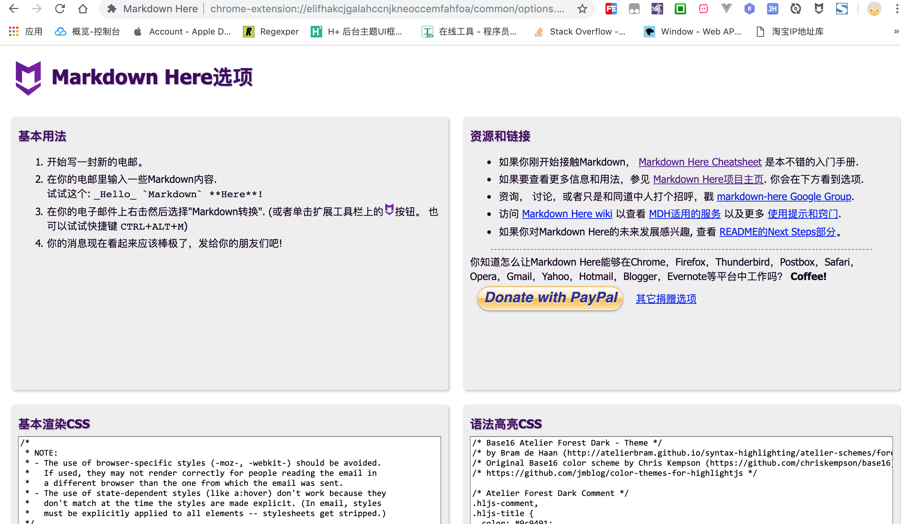
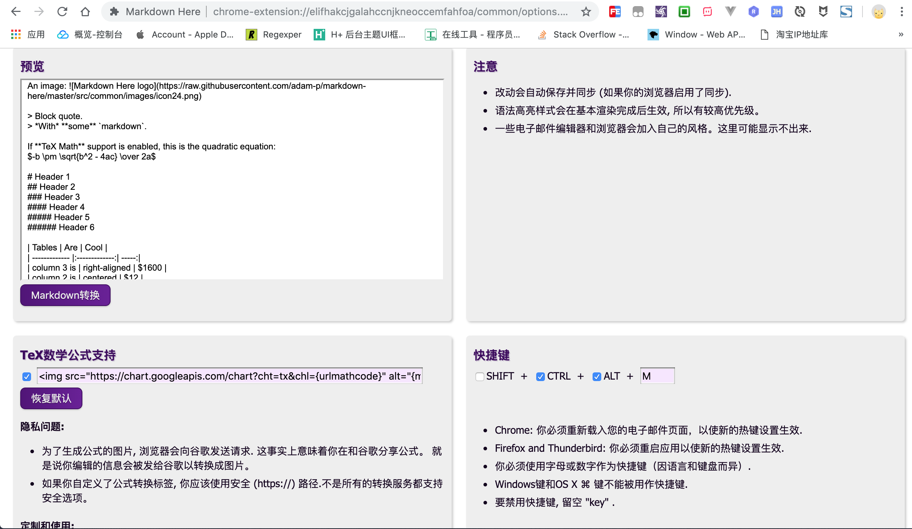
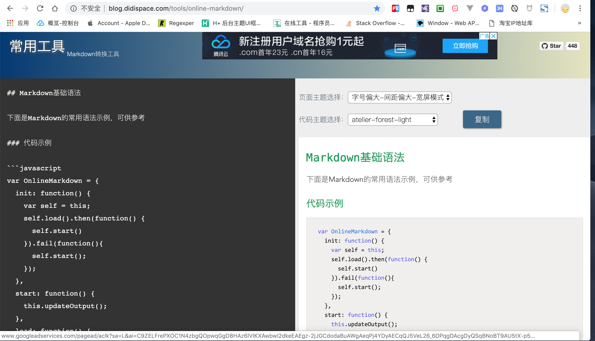

markdown转富文本
正常情况下不太希望你能看到这篇文章,可天不遂人愿, 总有些平台至今不支持 markdown 语言,没办法只能迁就它!
现在遇到的问题是,部分平台仅支持富文本格式,不支持 markdown 格式.既然想要在这些平台上发表文章,不得不按照他们的规定做事.
下面总结下笔者在用的一些方法:
1. markdown转富文本
适合已有 markdown 格式的文章,想要优雅转换成富文本格式,这种情况下我们只要能够获取到渲染后的富文本内容,然后复制到平台的编辑器即可.
不少 markdown 编辑器支持实时预览,一边是 markdown 源码,另一边是 富文本 预览,选中富文本然后复制,相当简单.
或者,将 markdown 源码上传到第三方平台在线转换成富文本格式,推荐 Markdown Here 插件或 在线工具.
Markdown Herechrome插件的使用方法:下载安装
Markdown Here插件各大浏览器基本上都有相应插件,如需翻墙,请自行解决.

配置插件并重启浏览器
支持自定义
css样式,内嵌多套主题可供选择.使用快捷键或命令面板转换
默认快捷键
CTRL + ALT + M,或者复制到插件的预览窗口,点击Markdown 转换
目标富文本内容拷贝回富文本编辑器
选中渲染后的富文本内容拷贝到目标编辑器
online-markdown在线工具的使用方法:复制源
markdown内容转换成目标富文本格式将源
markdown内容复制到左侧代码区,右侧可实时预览富文本效果
目标富文本内容拷贝回富文本编辑器
点击复制后到目标编辑器选择粘贴
2. 截图分享
适合懒癌晚期的作者,第一种方法转换后的富文本可能无法完美移植到某些平台时,而笔者又懒得重新编辑富文本,因此选择截图分享方式发布在该平台,只不过这种体验上稍差些,毕竟图片加载速度比文字相对来说还是慢很多!
简书和开源中国的 app 均支持截长图保存分享,网页端的话滚动截屏插件很多,目前在用fireshot还不错.
3. 重新编辑
适合认真负责的完美主义者,既然不支持 markdown 语言,那就用富文本编辑器重新编辑一份,素材和效果都有参考,再写一遍应该也不至于特别耗费时间,如果需要重写多份的话,那就另当别论了!